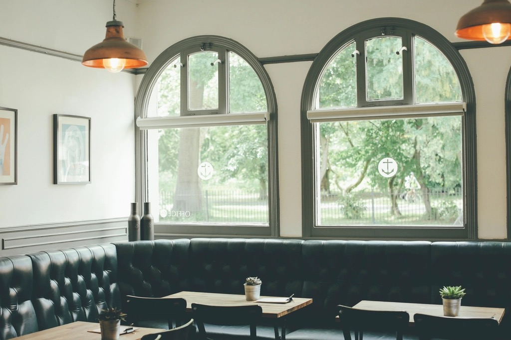
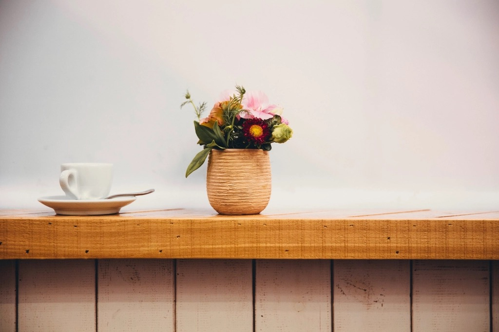

Butter croissant
From 7:00Laminated over three days with Danish butter, baked dark enough to shatter when you tear it.


A neighbourhood bakery that keeps its hours honest and its list short.
We opened on a corner in Nørrebro with one oven, one grinder and a rule we still follow: bake what we can finish in a day, and sell it the day it is baked. Nothing waits in a freezer for a busier morning.
The sourdough starter is nine years old now. The coffee comes from a roastery two streets away, roasted light and pulled short. The rest is bread, butter, and enough chairs for the people who live around here.
Five things we make every day, in the order the trays come out of the oven. The full list, with prices, lives on the menu.
Laminated over three days with Danish butter, baked dark enough to shatter when you tear it.

Cardamom in the dough, cinnamon in the fold, brushed with syrup while still hot.

A double ristretto under steamed milk, light roast from a roastery two streets away.

Whisked to order, served warm or over ice. Oat milk unless you say otherwise.

Baked hot and fast until the top goes almost too far, then left to settle overnight.
Grey water, white walls, long light. The city sets the pace and we mostly follow it.
Jægersborggade, Nørrebro Photographs licensed under Creative Commons — credits
Three decisions we made early and never got around to changing.

No bookings, no waiting list. There is usually a table after nine, and always a spot at the window bar.
Five minutes from Nørrebro station, on the quiet end of the street. Bikes fit along the railing outside.